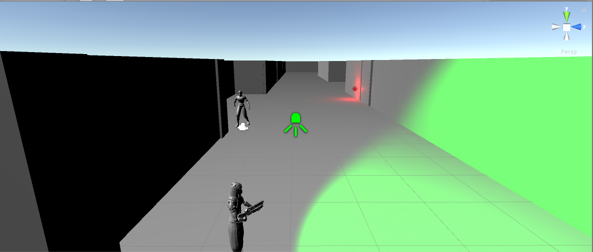
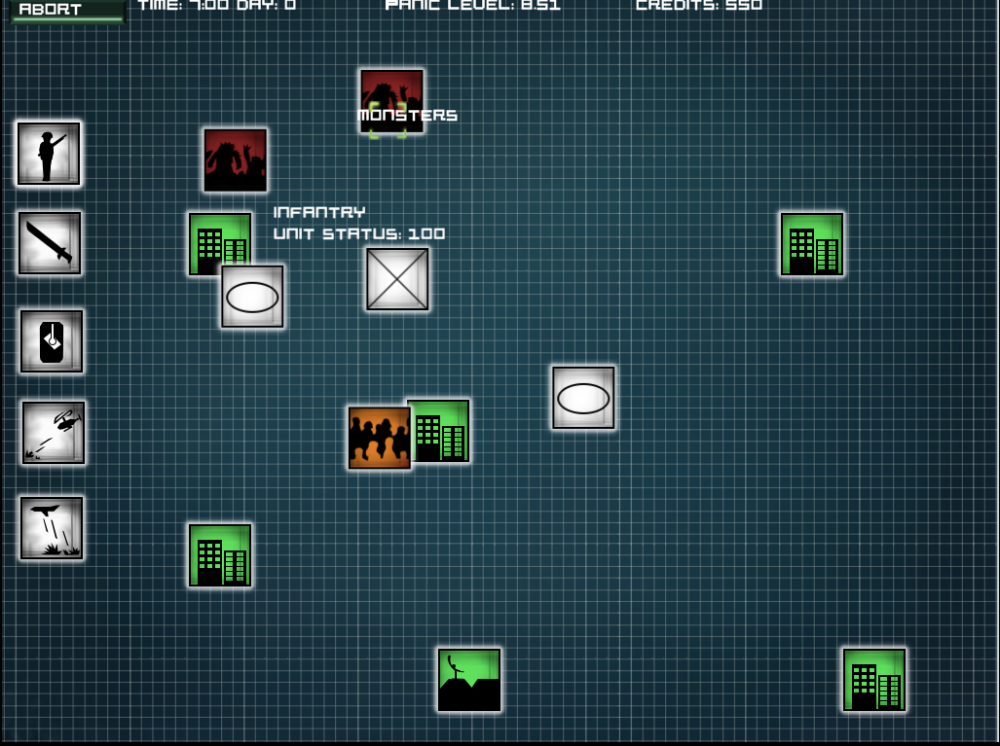
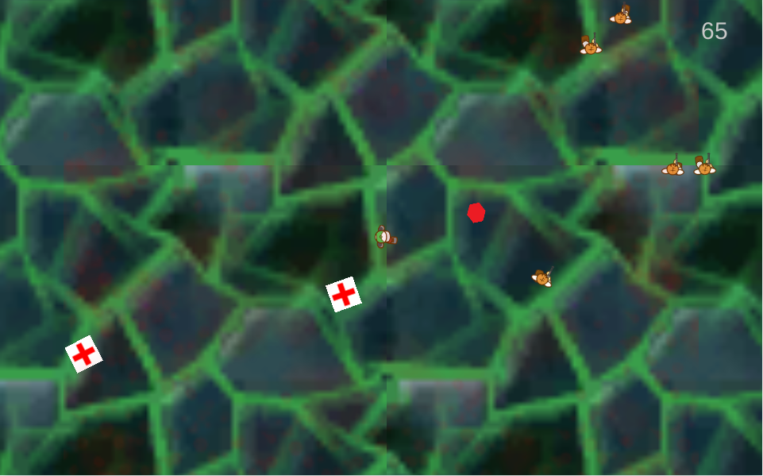
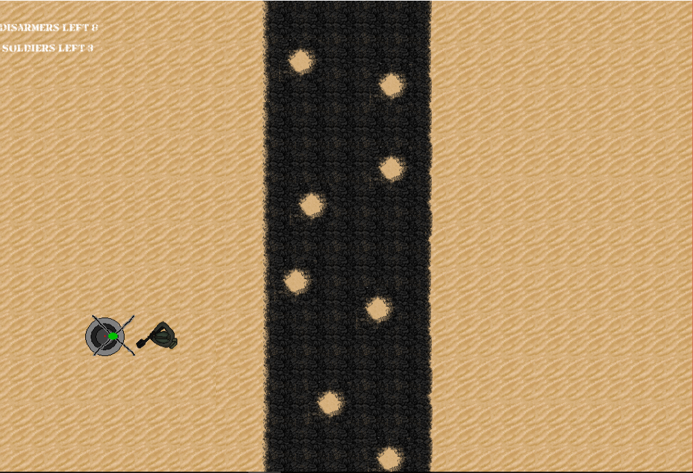

I am CS student and Web developer.
I also make games in Unity3D and GameMaker. Mostly for fun.
Like every cool programmer today I own a blog.
(It's partially in polish)
Check out my projects and please, enjoy your stay.
I also make games in Unity3D and GameMaker. Mostly for fun.
Like every cool programmer today I own a blog.
(It's partially in polish)
Check out my projects and please, enjoy your stay.

Somewhat accurate representation of
me
me

More software project than real game. Goal is to make other Unity3D stealth game projects easier to begin.

Game where you, as high rank military commander have to protect cities from monsters invasion.
Kinda inspired by Pacific Rim movie, and games from XCOM series.

Game created during Home of Nerds Jam 2017 with "Dying is good" as theme.
You have to avoid scientists shooting at you, but also keep in mind to not get too much heath packs, or you will die.
Development team: me, @JotKaToJa, @DominikMagdalenski, @czkawka and as a graphic designer @vahaal
Development team: me, @JotKaToJa, @DominikMagdalenski, @czkawka and as a graphic designer @vahaal

Something that started as classic Windows game clone, and ended as thrilling minesweeping simulation.